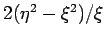
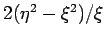

Inhalt Index DeskTop Bronstein

 Differentialgleichungen Partielle Differentialgleichungen Nichtlineare partielle Differentialgleichungen, Solitonen Nichtlineare Schrödinger-Gleichung
Differentialgleichungen Partielle Differentialgleichungen Nichtlineare partielle Differentialgleichungen, Solitonen Nichtlineare Schrödinger-Gleichung


Die NLS-Gleichung für die Evolutionsfunktion u und ihre Solitonlösung lauten:
und
Hier ist u(x,t) komplex. Das NLS-Soliton ist durch 4 dimensionslosen Parameter  und charakterisiert. Die Einhüllende des Wellenpakets bewegt sich mit der Geschwindigkeit , die Phasengeschwindigkeit der eingehüllten Welle ist .
und charakterisiert. Die Einhüllende des Wellenpakets bewegt sich mit der Geschwindigkeit , die Phasengeschwindigkeit der eingehüllten Welle ist .
Im Unterschied zum KdV-Soliton (9.135) können hier die Amplitude (über  ) und die Geschwindigkeit (über
) und die Geschwindigkeit (über  ) unabhängig voneinander gewählt werden.
) unabhängig voneinander gewählt werden.
Im Falle von N wechselwirkenden Solitonen werden diese durch 4N willkürlich wählbare Parameter charakterisiert: . Falls die Solitonen verschiedene Geschwindigkeiten haben, zerfällt die N-Solitonenlösung asymptotisch für in eine Summe von N individuellen Solitonen der Form (9.140).
Die Abbildung zeigt eine Darstellung des Realteiles von (9.140) mit und .